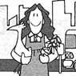

TOP: Priscilla pucks some wisteria vines (no poison ivy, please!) into a bucket to begirt tire amazingly simple process of creating drawing charcoal. RIGHT: She then burns them in the sealed container until the smoke stops coming out of the holes in the foil ""lid"". BOTTOM: As Priscilla's artwork illustrates, homemade charcoal sticks work just us well us store-bought ones!